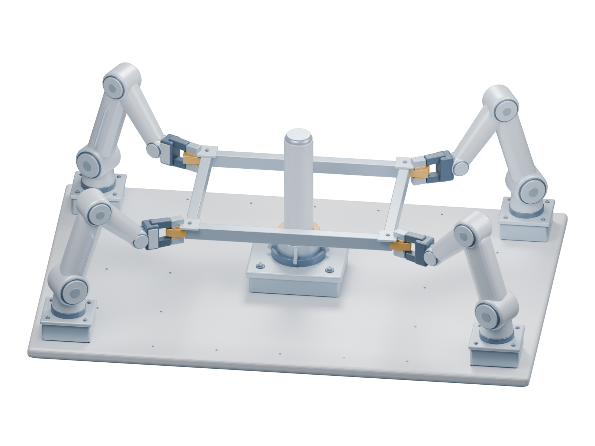

Complete local policies. Learned interaction.
VLA-Fabric
Learning multi-arm coordination.

On physical robots
Different views.
One coordinated action.
Each policy acts on its own observations. Peer representations connect local decisions into a shared physical task.
Four-arm frame installation
Four arms lift, align, and lower a shared frame over a peg.
per setting
Wrist-view surroundings are privacy blurred. Camera views retain the same recording timeline. Videos are selected qualitative examples; rates summarize repeated physical trials.
Coordination becomes a learnable interface
between complete local policies.
Beyond two arms
Compose the team.
Keep each policy complete.
Three- and four-arm tasks span independent placement, shared-object alignment, and assembly. Each agent retains its local action head.
Success rates: 200 evaluation conditions per setting. Clips are labeled by source; demonstration replays illustrate tasks and do not represent policy success rates.
Discover. Transfer. Extend.
How should
VLA agents interact?
We study interaction within action generation, then re-instantiate its functions in another VLA architecture and extend the team to more arms.
Interaction structure and adaptation both matter.
A controlled two-task study varies peer information, Common aggregation, action interaction, and fine-tuning. Richer information becomes useful when policies learn how to incorporate it.
Across VLA architectures
One principle.
Different realizations.
SingleVLA and π0.5 realize shared context, peer latent context, and action-stage coordination at different computational boundaries.
| Policy | Handover Box | Shoes Table | Handover Mic | Scan Object |
|---|---|---|---|---|
| SingleVLA-Fabric | 80.0 | 70.0 | 84.0 | — |
| π0.5-Fabric | 80.5 | 94.5 | 97.5 | 33.0 |
| Shared π0.5-Fabric | 69.0 | 78.0 | 97.0 | 40.0 |
Task-adapted results describe system capability across separately pretrained backbones. Shared policies use the same role checkpoints across tasks; their row reports development results, not the single-task evaluation split.
Build on VLA-Fabric
The next agent
starts with a local policy.
Interaction implementations, task environments, training, and evaluation.
Explore the code